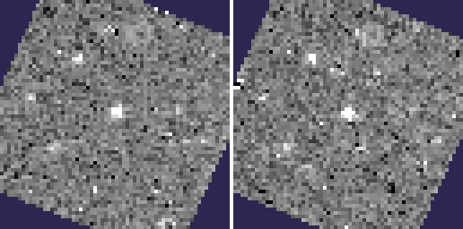
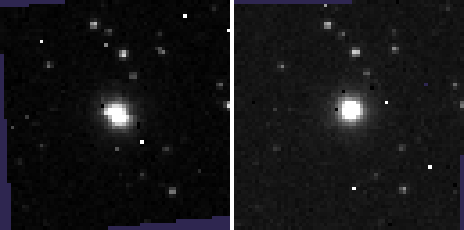
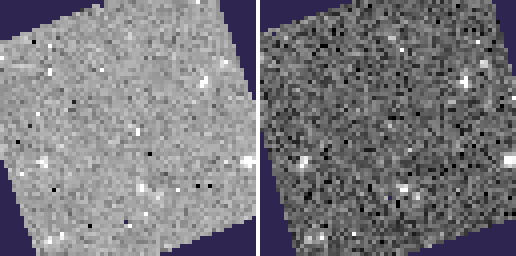

Distances on the sky are in arcseconds (arcsec). An arcsecond is a sixtieth of a sixtieth of a degree, and one pixel of a SPHEREx photo is 6.15 arcsec across. The mark and number beside a figure name the check behind it, and open it.
EPSILON INDI B
Object
Two brown dwarfs, close to the Sun, drifting across the sky.
Measured
How far it moved across the sky since the earlier image
With a WISE image of , on the same grid of the sky as the SPHEREx one: north is up and east is to the left in both. The ring is where the catalogue puts it on the date of each picture, the dashed ring where it puts it on the date of the other, and the line is its path between the two. The cross is where it was measured.
What these two pictures are
WISE, 2010: AllWISE Atlas image, band W2 (4.6 µm), tile 3306m561_ac51: a mean of photos taken from 2010-04-28 to 2010-10-30; beyond the edge of that tile the picture shows tile 3323m576_ac51
SPHEREx, April 2026: median of the 11 photos of detector 6 taken from 2026-04-29 to 2026-05-04, drawn on the same sky grid
Both are drawn on one grid of the sky, north up and east to the left, so they are resampled; the grey scale of each is its own.
Moved 74.3 arcsec since ; the catalogue gives 73.9 arcsec.
Within SPHEREx’s own data, in the photos of detector six, from May 2025 to April 2026, it moved 4.8 arcsec, give or take 0.2; the catalogue gives 4.7 arcsec. K5-motion
74.3 arcsec in 15.8 years, between the earlier image (April 2010 to October 2010) and SPHEREx (April 2026)
Reference
73.9 arcsec, from Gaia DR3 6412596012146801152, ESA Gaia archive (gaiadr3.gaia_source), epoch J2016.0
Gap between the two shifts
0.5 arcsec, which is 0.09 of a SPHEREx pixel. The two shifts are compared east and north, so this is never smaller than the plain difference of the two lengths above.
Tolerance
4.2 arcsec
In SPHEREx alone
0.14 of a pixel from where the catalogue puts it; tolerance 0.5

Earlier visit
Later visit
Colour
The same in both
Between these two visits the star moves about 0.77 of one SPHEREx pixel: blink the two and look for the jump.The earlier visit is on the left, the later one on the right. 7 pairs of photos match in colour; this is the first.
BARNARD’S STAR
Object
The fastest-moving star in the sky.
Measured
How far it moved across the sky since the earlier image
With a WISE image of , on the same grid of the sky as the SPHEREx one: north is up and east is to the left in both. The ring is where the catalogue puts it on the date of each picture, the dashed ring where it puts it on the date of the other, and the line is its path between the two. The cross is where it was measured.
What these two pictures are
WISE, 2010: AllWISE Atlas image, band W2 (4.6 µm), tile 2688p045_ac51: a mean of photos taken from 2010-03-18 to 2010-09-19
SPHEREx, March 2026: median of the 19 photos of detector 6 taken from 2026-03-19 to 2026-03-25, drawn on the same sky grid
Both are drawn on one grid of the sky, north up and east to the left, so they are resampled; the grey scale of each is its own.
Moved 163.7 arcsec since ; the catalogue gives 163.8 arcsec. Position only: no brightness is given.
Too bright for WISE: its position is read from the wings of a saturated image, so it is known less well than the others.
163.7 arcsec in 15.8 years, between the earlier image (March 2010 to September 2010) and SPHEREx (March 2026)
Reference
163.8 arcsec, from Gaia DR3 4472832130942575872, ESA Gaia archive (gaiadr3.gaia_source), epoch J2016.0
Gap between the two shifts
0.1 arcsec, which is 0.01 of a SPHEREx pixel. The two shifts are compared east and north, so this is never smaller than the plain difference of the two lengths above.
Tolerance
12.2 arcsec
In SPHEREx alone
0.04 of a pixel from where the catalogue puts it; tolerance 0.5

Earlier visit
Later visit
Colour
The same in both
Between these two visits the star moves about 1.01 of one SPHEREx pixel: blink the two and look for the jump.The earlier visit is on the left, the later one on the right. 8 pairs of photos match in colour; this is the first.
WISE 0855-0714
Object
The coldest brown dwarf known, and a fast mover.
Measured
How far it moved across the sky since the earlier image
With a WISE image of , on the same grid of the sky as the SPHEREx one: north is up and east is to the left in both. The ring is where the catalogue puts it on the date of each picture, the dashed ring where it puts it on the date of the other, and the line is its path between the two. The cross is where it was measured. The small square marks a star that the Gaia catalogue lists (Gaia DR3 5756956644387831296): it stays put, and is not the target.
What these two pictures are
WISE, 2010: AllWISE Atlas image, band W2 (4.6 µm), tile 1342m076_ac51: a mean of photos taken from 2010-05-03 to 2010-11-13
SPHEREx, April 2026: median of the 21 photos of detector 6 taken from 2026-04-21 to 2026-05-11, drawn on the same sky grid
Both are drawn on one grid of the sky, north up and east to the left, so they are resampled; the grey scale of each is its own.
Moved 128.1 arcsec since ; the catalogue gives 128.6 arcsec. Position only: no brightness is given.
Within SPHEREx’s own data, in the photos of detector six, from November 2025 to April 2026, it moved 3.2 arcsec, give or take 0.8; the catalogue gives 4.6 arcsec. K5-motion
128.1 arcsec in 15.7 years, between the earlier image (May 2010 to November 2010) and SPHEREx (April 2026)
Reference
128.6 arcsec, from Kirkpatrick et al. 2021, ApJS 253, 7 (2021ApJS..253....7K), as served by SIMBAD for WISEA J085510.74-071442.5; the position is given at epoch J2000.0 there. Not in Gaia. These values were taken from a database; the paper itself has not been read yet.
Gap between the two shifts
0.7 arcsec, which is 0.11 of a SPHEREx pixel. The two shifts are compared east and north, so this is never smaller than the plain difference of the two lengths above.
Tolerance
4.8 arcsec
In SPHEREx alone
0.07 of a pixel from where the catalogue puts it; tolerance 0.5

Earlier visit
Later visit
Colour
The same in both
Between these two visits the star moves about 0.60 of one SPHEREx pixel: blink the two and look for the jump.The earlier visit is on the left, the later one on the right. 8 pairs of photos match in colour; this is the first.
RW AURIGAE
Object
A young star that dims and brightens without warning.
Measured
How much its brightness changed, in each band of colour
It does not move: what changes between the two visits is its brightness.The earlier visit is on the left, the later one on the right. 8 pairs of photos match in colour; this is the first.
Between September 2025 and February to March 2026 it changed by a different amount in each colour.
Steady stars in the same photos, measured the same way: where they change too, the change is not the star’s own.
Tolerance
A band is shown where those steady stars hold to within 1 %.
The star
Gaia DR3 156430822114424576, ESA Gaia archive (gaiadr3.gaia_source), epoch J2016.0
No outside comparison shown.
Its change in each band of colour
0.74–1.06 µmtoo bright to measure reliably
+36.0 % at 1.13–1.62 µmgive or take 3.6 %, from 11 pairs of photos; the 14 steady stars beside it changed by −0.55 %
+28.2 % at 1.67–2.41 µmgive or take 9.9 %, from 14 pairs of photos; the 12 steady stars beside it changed by −0.86 %
2.43–3.73 µmtoo bright to measure reliably
3.85–4.39 µmtoo bright to measure reliably
4.42–5.00 µmtoo bright to measure reliably
Colours are wavelengths in micrometres (µm), from the shortest on the left of the ruler to the longest on the right. A band without a figure is too close to saturation: the star’s own light spoils the measurement there.
It does not move: it is too bright for the detector.The earlier visit is on the left, the later one on the right. 8 pairs of photos match in colour; this is the first. The middle of the star is left empty: the light there was too much for the detector.
Saturated in 412 of the 412 photos checked: no brightness is given.